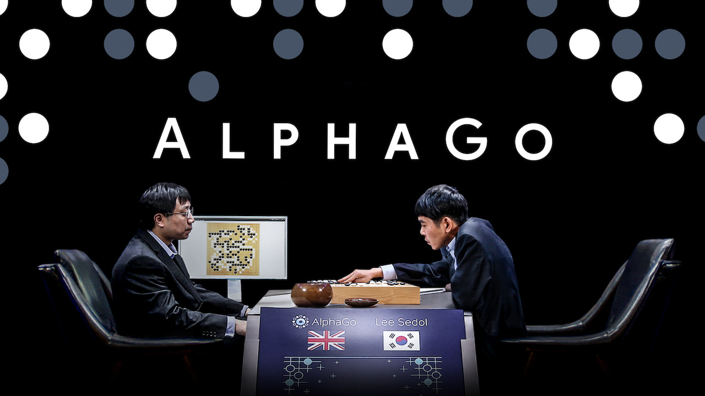

L'intelligence artificielle dans le domaine des jeux de société
Depuis le début des années 1990, l'ordinateur se développe d'une vitesse très impressionnante. IBM développe une intelligence artificielle nommée "Deep Blue".
Une intelligence artificielle capable de battre les meilleurs joueurs d'échecs. Il arrivera à battre le célèbre champion du monde d'échec "Garry Kasparov" en 1997 lors d'une revanche.Cela démontre que l'intelligence des machines dépasse désormais ceux des hommes.
 Photo de l'apparence du superordinateur qui a battu le champion du monde d'échec
Photo de l'apparence du superordinateur qui a battu le champion du monde d'échec
Une dizaine d'années plus tard, Google avec sa filiale nommé "DeepMind" ont créé, eux aussi, une intelligence artificielle qui s'appelle "AlphaGo".Cette fois-ci, l'ordinateur va s'attaquer au "jeu de Go".
Cependant, cette tâche s'annonce plus difficile qu'avec le jeu d'échec.
En effet, le jeu d'échec présente beaucoup moins de possibilités de mouvements que le jeu de Go.Mais en octobre 2015, il a gagné 5 partie sur 5 contre le champion d'Europe Fan Hui.Et en mars 2016, il arriva à remporté 4 victoire sur 5 contre le champion du monde Lee Sedol (Désigné champion du monde entre 2000-2010).

Photo issue du match entre AlphaGo et Lee Sedol
Un an après la victoire d'AlphaGo contre Lee Sedol, DeepMind à développé une version améliorée de AlphaGO nommée "AlphaGo Zero".
Cette version mérite qu'ont s'y attarde car elle a une conception assez originale.
En effet, contrairement à AlphaGo qui fonctionnait avec les connaissances des humains, AlphaGo Zero as démarré uniquement avec le visuel du plateau ainsi qu'avec les régles.Ayant ces informations, elle a effectué des millions de parties contre elle-même. Ainsi, elle a pu comprendre les mécaniques du jeu et découvrir de nouvelle ouverture du jeu de Go
Donc en 3 jours, AlphaGo Zero a pu vaincre la première version de AlphaGo durant 100 partie où elle a obtenu 60 victoires.
Tous cela démontre que les intelligence artificielle peuvent maintenant réflichir par eux même et que maintenat elle nous dépasse de très loin.